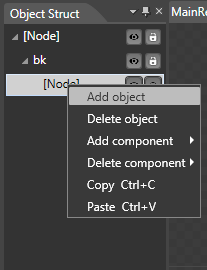
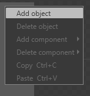
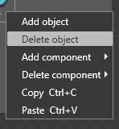
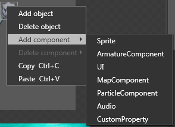
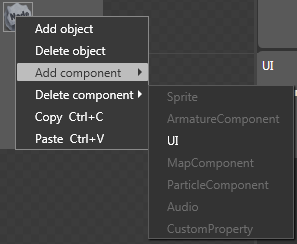

Object Structure Panel
Introduction

1. The root of the structure tree is a node that represents a game object.
2. The added object in the structure tree has a corresponding object in the rendering area.
Feature
Show/Hide
1. Select the Eye icon to set the widget to either Show or Hide.
2. The Show/Hide button is used to set the widget's visible property and is synchronized with the property panel.
Lock/Unlock
1. Select the Lock icon to set the widget to Lock or Unlock.
2. The locked control will shield all operations.
Layers Adjustment
Adjusts the level of the widget by dragging the mouse through the structure tree.
Right-Click Menu
Add Object

Adding an object to the canvas.
When you select a scene and right-click to add another object as a subset, please note that if you selected nothing as the target object, the scene will be added to the root object as a subset.
Delete Object

Deletes the selected object
2. If you delete a object which contains a subset, the subset will be deleted.
Add Components

| Armature Component | The Armature animation component is the rendering component which renders Armature animations. If you mount the Armature animation component, an empty object can be converted into an animation object. |
| Map Component | The map component is a rendering component renders the tmx format map file. If you mount the map component, an empty object can be converted into a map object. |
| UI Component | The UI component is a rendering component which renders UI controls. If you mount the UI component, an empty object can be converted into an UI object. |
| Particle Component | The Particle component is a rendering component which renders a pliat format Particle file. If you mount the Particle component, an empty object can be converted into a Particle object. |
| Custom Property | The Custom Property Component loads data from the json file. |
| Audio | The Audio Component plays mp3 and wav fomat audio file. |
| Sprite | The Sprite component is a rendering component which renders the png format image file. |
1. An empty object can only mount one rendering component.
2. An empty object can only add an audio component and a Custom Property Component.
Delete Component

| Armature Component | Remove Armature Component |
| Map Component | Remove Map Component |
| UI Component | Remove UI Component |
| Particle Component | Remove Particle Component |
| Custom Property | Remove Custom Property Component |
| Audio Component | Remove Audio Component |
| Sprite Component | Remove Sprite Component |
If the selected node does not contain a component, the component corresponding menu item will be shielded.
Copy
1. If no object is selected, the menu item will be masked.
2. Use the keyboard shortcut Ctrl + C to additionally select multiple files.
Paste
1. If the object is not copied, this menu item is masked.
2. The pasting position varies according to the mouse position.
3. When using the keyboard shortcut Ctrl + V to paste, the current position is the pasted object replication.